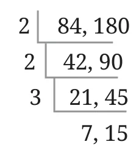
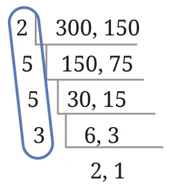
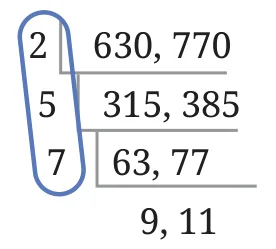
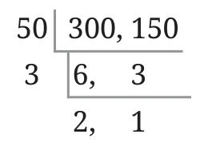
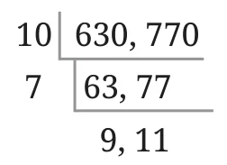

See the procedure on the right. Can you explain how it has been carried out?

This is similar to the procedure for prime factorisation. At each step, the two numbers are divided by a common prime factor, and the two quotients are written down in the next row. This continues till we get two numbers that do not have any common prime factors.
How do we use this to find the HCF of 84 and 180? Explore.
[Hint: Observe that \(84 = 2 \times 2 \times 3 \times 7\), and \(180 = 2 \times 2 \times 3 \times 15\) similar to prime factorisation]
Find the HCF in the following cases.

\(\text{HCF} = 2 \times 5 \times 5 \times 3\)

\(\text{HCF} = 2 \times 5 \times 7\)
This procedure not only gives the HCF but can also be used to find the LCM! Can you see how?

\(\text{LCM} = 2 \times 5 \times 5 \times 3 \times 2 \times 1\)

\(\text{LCM} = 2 \times 5 \times 7 \times 3 \times 3 \times 11\)
Why are these the LCMs?
[Hint: Will the product of the factors marked as the LCM of 300 and 150 contain the prime factorisations of both 300 and 150? Is this the smallest such number?]
Guna says “I found a better way to factorise to find HCF/LCM. This is faster than what was taught in class!”
“For the numbers 300 and 150, I can first directly divide both numbers by 50.

The HCF will be \(50 \times 3\).
The LCM will be \(50 \times 3 \times 2 \times 1\)”.
Anshu also tried to remove the bigger common factors. “For 630 and 770, I will divide both numbers by 10 first. Now, I can divide them by 7.

The HCF will be \(10 \times 7 = 70\)
The LCM will be \(10 \times 7 \times 9 \times 11 = 6930\)”.
Can you see why this works?
We need not restrict ourselves to dividing only one prime factor at a time. Both numbers can be divided by whatever common factor we are able to identify.
You can try this method for these pairs of numbers.

- 90 and 150
- 84 and 132